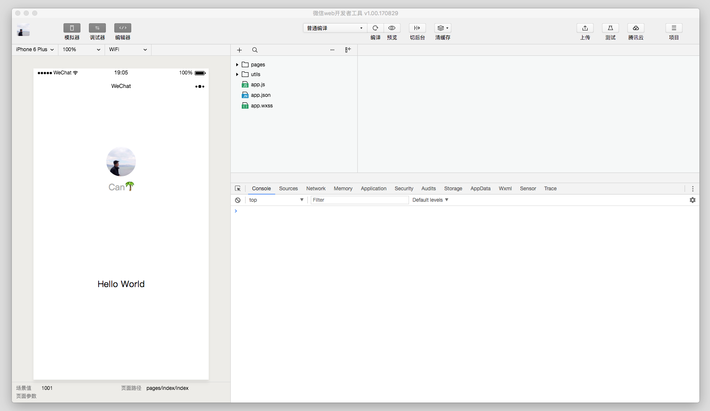

主页
1.1.
前言
1.2.
编辑器和IDE简介
1.3.
常见编辑器和IDE
1.4.
通用功能和逻辑
1.4.1.
编辑器通用功能和逻辑
1.4.2.
IDE通用功能和逻辑
1.5.
编辑器和IDE详解
1.5.1.
编辑器详解
1.5.1.1.
VSCode
1.5.1.2.
Sublime Text
1.5.1.3.
Atom
1.5.1.4.
vi/vim
1.5.1.5.
Emacs
1.5.1.6.
Notepad++
1.5.1.7.
Source Insight
1.5.2.
IDE详解
1.5.2.1.
JetBrains公司
1.5.2.1.1.
PyCharm
1.5.2.1.2.
IntelliJ IDEA
1.5.2.1.3.
PhpStorm
1.5.2.1.4.
WebStorm
1.5.2.2.
Visual Studio
1.5.2.3.
Eclipse
1.5.2.4.
Android Studio
1.5.2.5.
Aptana Studio
1.5.2.6.
Xcode
1.5.2.7.
微信开发者工具
1.5.2.8.
HBuilder
1.6.
编辑器和IDE总结
1.7.
附录
1.7.1.
参考资料
本书使用 GitBook 发布
微信开发者工具
微信开发者工具
腾讯旗下，用来开发
小程序
的工具。
主页：
微信开发者工具
截图

results matching "
"
No results matching "
"